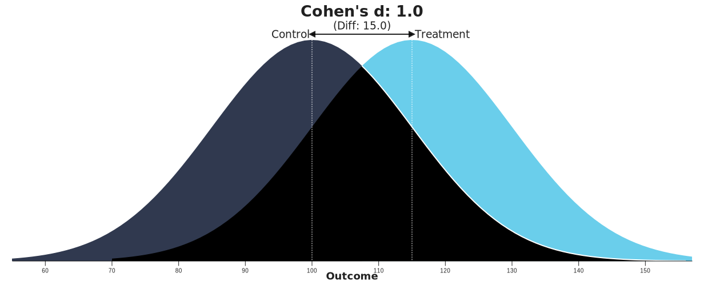
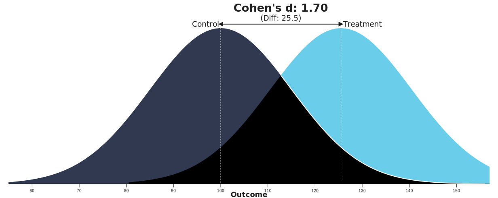

Exploration: The Perils of Inadequate Samples, Even When p < .05
Let’s explore why inadequate samples are so problematic.
Imagine you are measuring the effect of maternal separation on gene expression in the hippocampus. You’ll have two groups: Control and Separated. You’ll use qPCR to measure expression of egr1, a constituitvely-expressed gene that plays an important role in learning and memory.
Without a sample-size plan, you’d likely rely on the previous literature or lab practices to set a sample size. In qPCR experiments like this one, n = 6/group is pretty common, so that’s what you decide to go with.
Let’s suppose that in this case, your research hypothesis is absolutely correct: maternal separation does produce a large and robust increase in egr1 expression. We’ll set the effect size at 1 standard deviation (Cohen’s d = 1; see the section on effect sizes if you’re not sure what this means).
This sounds like an ideal situation: the researcher has a hypothesis that is actually correct! Let’s see, though, what happens when this true hypothesis is investigated with n = 6/group.
In the simulation below, we randomly generate gene-expression data for the Control and Separated groups, drawing the data from distributions that are 1 standard deviation apart. With each draw we then run a t-test and check to see if it is statistically significant or not. Given that the researcher’s hypothesis is true, we might expect this experiment to always “work”, regularly producing p < .05. In fact, though, it does not.!
[1] "Simulated 10000 2-group experiments with n = 6 /group and a true effect of 1 standard deviations."
print("Proportion of statistically significant findings (p < .05):")
[1] "Proportion of statistically significant findings (p < .05):"
print(sigfindings/simcount)
[1] 0.3343
print("Typical margin of error:")
[1] "Typical margin of error:"
print(mean(all_res$CIlength/2))
[1] 1.373593
What we find, instead is that only about 33% of experiments yield p < .05. Why so low? Well, consider that statistical tests examine if the difference observed (signal) is substantially greater than expected sampling error (noise). With the sample-size we selected, though, expected sampling error is large: in fact, the margin of error in these studies is typically ~1.37 standard deviations, far larger than the signal it would be reasonable to expect!
If the noise in this type of study is bigger than the signal, how do any of the experiments still turn out to be statistically significant? This occurs when sampling error breaks in just the right way to distort the effect–to make it seem much bigger than it really is, so that, for that misleading sample at least, the effect observed is substantially larger than the real truth. Uh oh! That’s right, in these cases p < .05 can only occur by mis-characterizing the actual truth.
Let’s see this in more detail. We’re going to plot the effect observed in each study. The line at 1 standard deviation represents the true effect. Because of sampling error, studies “dance” around this truth – some get a bit too large of an effect, others a bit too small. Notice, though, the coloring, which represents statistical significance. Most of the dots are blue, not significant – that’s the low power of the experiment. But note that the dots that are red are all studies that radically over-estimated the real truth.
print("Across all stimulated studies, the average effect size observed is:")
[1] "Across all stimulated studies, the average effect size observed is:"
mean(all_res$d)
[1] 0.9980306
print("But for the studies that reached statistical significance, the average effect size observed is:")
[1] "But for the studies that reached statistical significance, the average effect size observed is:"
mean(all_res[all_res$p < .05, ]$d)
[1] 1.699621
Wow! The statistically-significant effects over-state the truth by over 70%.

True Effect Size

Observed Effect Size when p < .05
That’s a big distortion, and it really matters. It means:
What seems like a major/breakthrough effect may actually be more modest
Follow-up studies done at the same sample-size are more likely than not to fail!
This is the difficult truth about inadequate sample-sizes: it’s not just about the waste of not detecting true effects, it’s also that they only succeed by distorting the truth and making modest effects seem massive. It’s very difficult to do fruitful, generative science if what you publish is a distorted view of reality.